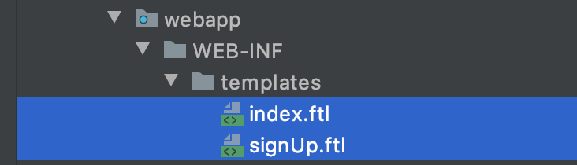
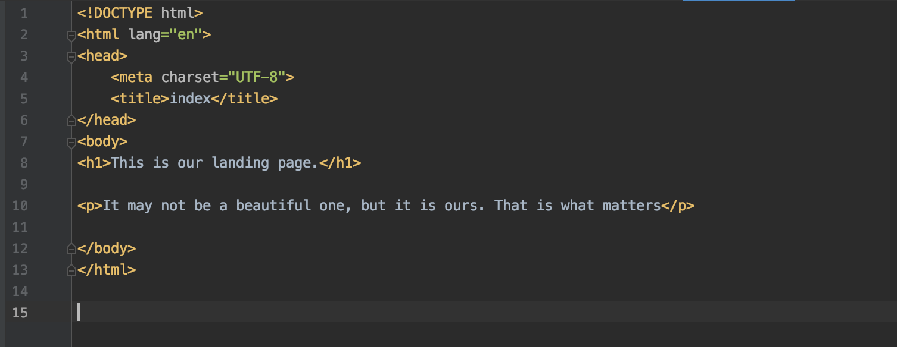
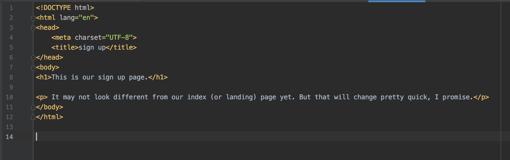
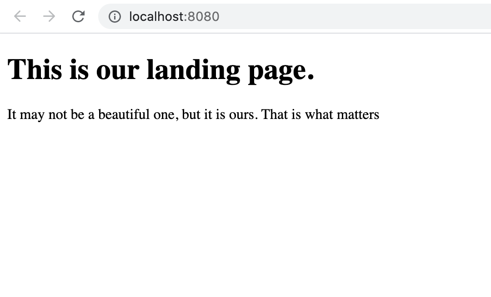
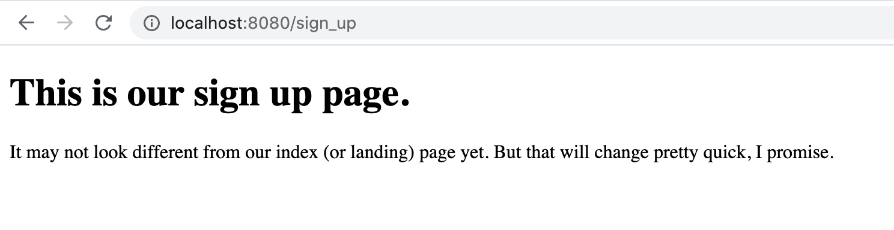

Our First FTL pages
Introduction
When we make a request to server we can get data back. That data is usually returned in a form of a webpage. Language that is used across the internet to create and construct pages is called HTML. HTML is similar in its idea to XML. It also uses tags to group data. The only difference is that those tags dictate how to perform data on our screens. HTML files that contain only HTML (often you can find that you may get CSS and JavaScript code inside HTML files as well) are static. That means that content of them does not change. Quite like pom.xml file. Once program is running you cannot update such files.
Quite often we want to show users some web pages that dynamically update. When news are added to the system we want to show all our users that we have new content to view. How do we do that? Well, we have something called dynamically updated content. This content usually comes in templates
They are web pages, written using HTML and some special syntax. That special syntax will get changed into some appropriate HTML code when we pass some data to the template. Users will get a page that contains only HTML, CSS and JavaScript.
We will write all of our pages using a template engine. We will use a template engine called Apache Freemarker Template (FTL for short). There are many other template engines to choose from, some other well known are:
- Thymeleaf
- JSP
You can choose any one you like but I will write my templates with FTL.
Steps
Step One: Add dependencies
We need a special dependency to work with Apache FreeMarker Template Engine.
We will also need another Spring dependency called spring-context-support
Do the following:
Your pom.xml should get two new dependencies:
pom.xml:
<dependency>
<groupId>org.freemarker</groupId>
<artifactId>freemarker</artifactId>
<version>2.3.23</version>
</dependency>
<dependency>
<groupId>org.springframework</groupId>
<artifactId>spring-context-support</artifactId>
<version>${spring.version}</version>
</dependency>
Step Two: Create two templates for our two pages
Our templates are going to be located in a folder called templates inside WEB-INF.
Inside there create two FTL pages and name them how you like.
Then fill these pages with some basic HTML. If you don’t know any you can simply copy mine.
Do the following
- Create templates folder
- Create 2 FTL pages
inside WEB-INF folder
inside templates folder
Contents of index.ftl:
Context of signUp.ftl:
Note: Even if we don't have any dynamically-updating content on a page we still can use FTL files. They supprt HTML, CSS and JavaScript. Eventually, users still will get HTML, not FTL files. FTL will be transformed into HTML on the server's side.
Step Three: Write some configuration
We need to tell Spring that we are using FTL. We also want it to know where to look for these files. For that we need to write some configuration for our dispatcher servlet.
Inside the WebConfig (for Java configuration) we need to create two beans that will help Spring to work with our FTL files.
First one is FreeMarkerViewResolver. This class tells Spring how to treat a file when it finally finds it and some other useful information about the file.
Of course, we need to configure our FreeMarkerViewResolver. I have shown it in the picture below and in the comments I have explained what each line of code does.
Next bean is for making Spring able to configure some basic information about the files (like where to find them and what encoding to use). We need a bean of class FreeMarkerConfigurer. What to do exactly I show in the pictures below.
Do the following:
- Create a bean of class FreeMarkerViewResolver
- Create a bean of class FreeMarkerConfigurer
WebConfig.class:
/**
*
FreeMarkerViewResolver
**/
@Bean
public FreeMarkerViewResolver getFreeMarkerViewResolver ()
FreeMarkerViewResolver resolver = new FreeMarkerViewResolver() ;
resolver.setSuffix(".ftl") ; // sets a suffix for all our ftl pages
resolver.setPrefix("") ; // tells Spring that there is no special prefix (beginning) for names of our ftl files
resolver.setContentType("text/html;charset=UTF-8") ; // Tells Spring that all of our ftl files are of type text/html
resolver.setCache(false) ; // we don't need to cache our files
resolver.setOrder(1) ; // sets order for this bean to be loaded into Spring Context
return resolver;
}
/**
*
FreeMarkerConfigurer
**/
@Bean
public FreeMarkerConfigurer getConfigurer () {
FreeMarkerConfigurer configurer = new FreeMarkerConfigurer() ;
configurer.setTemplateLoaderPath("/WEB-INF/templates") ; // tells Spring where to find our ftl files
configurer.setDefaultEncoding("UTF-8") ; // states the encoding of our files
configurer.setFreemarkerSettings(new Properties () {{
this.put("default_encoding", "UTF-8")
}});
return configurer;
}
And by the way, don’t forget to delete the .jsp file that is stored in WEB-INF. That is a file that uses JSP templates. We don’t need it.
Step Four: Make methods in our controller return our new ftl pages.
Usually methods that are marked with @GetMapping or @PostMapping return some value. One of the common types of returned value is String.
The String that we will return will be a path to a web page that we will return user.
Because we have set a bean that tells Spring where to find our ftl files we don’t need to write full direction in the returned String. Instead we can state a relative path from our directory with templates called templates. And because we also have set the suffix of all our files we don’t need to state the file type in the String that we will return.
Do the following:
- Change your index() and signUpGet() methods to return String.
- Return String at the end of each method that will direct Spring to correct web pages.
AuthController.class:
/**
* @author adtimokhin
*
31.07.2021
**/
@Controller
public class AuthController {
@GetMapping ("/") // this method will be evoked when user types "/" into the url bar
public String index ()
// Method for our landing page.
return "index";
}
@GetMapping ("/sign_up") // this method will be evoked when user types "/sign_up" into the url bar
public String signUpGet ()
// Method for our sign up functionality.
return "signUp";
}
}
Now you can check how the program runs. When you load your program you should see the index.ftl page. When you type “/sign_up” url you should see the signUp.ftl page.
This is what you should see:
